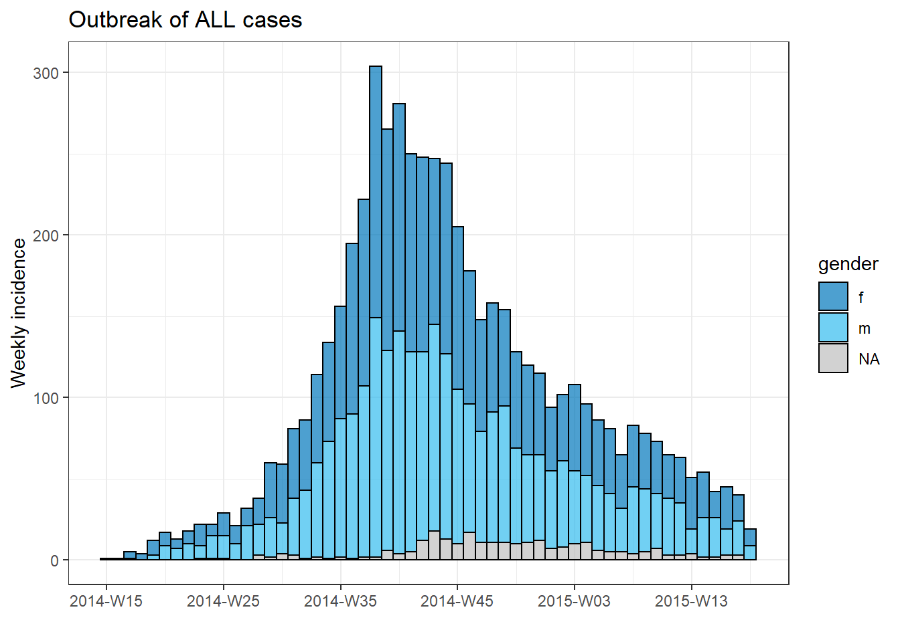
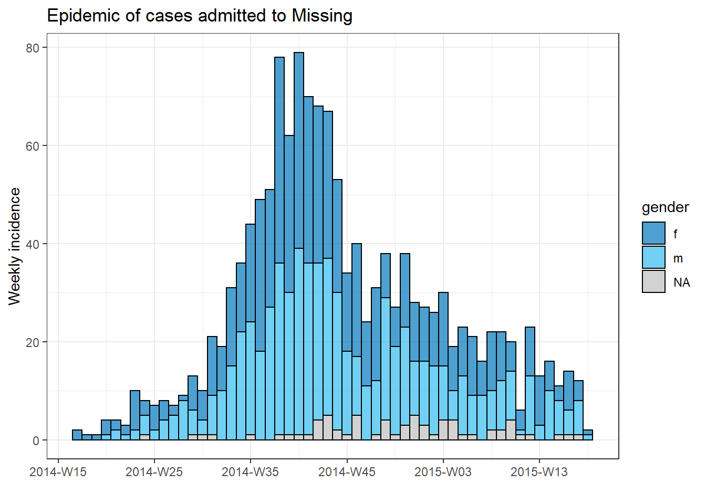
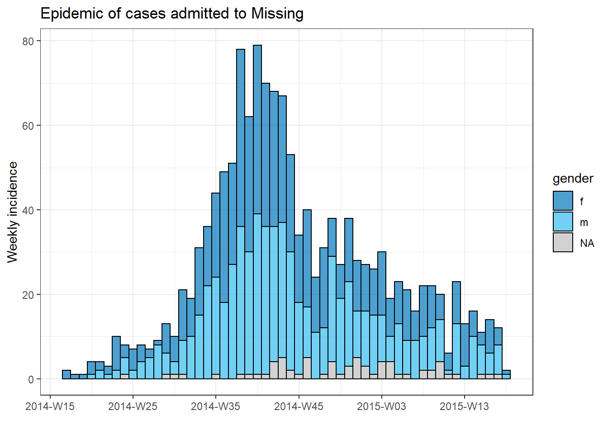
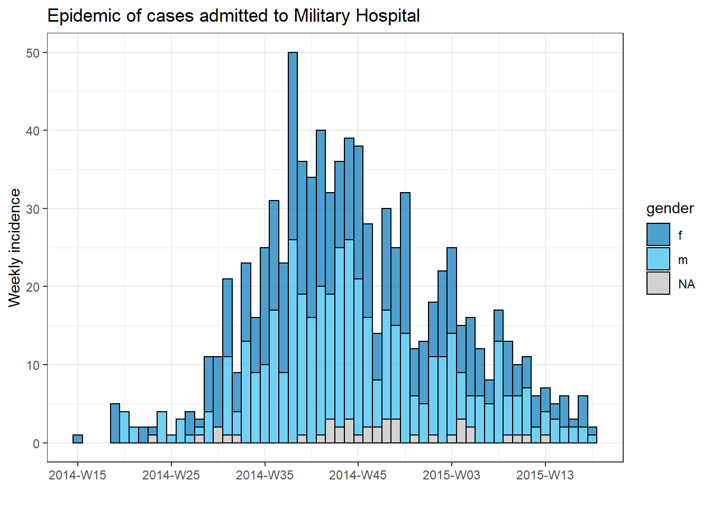
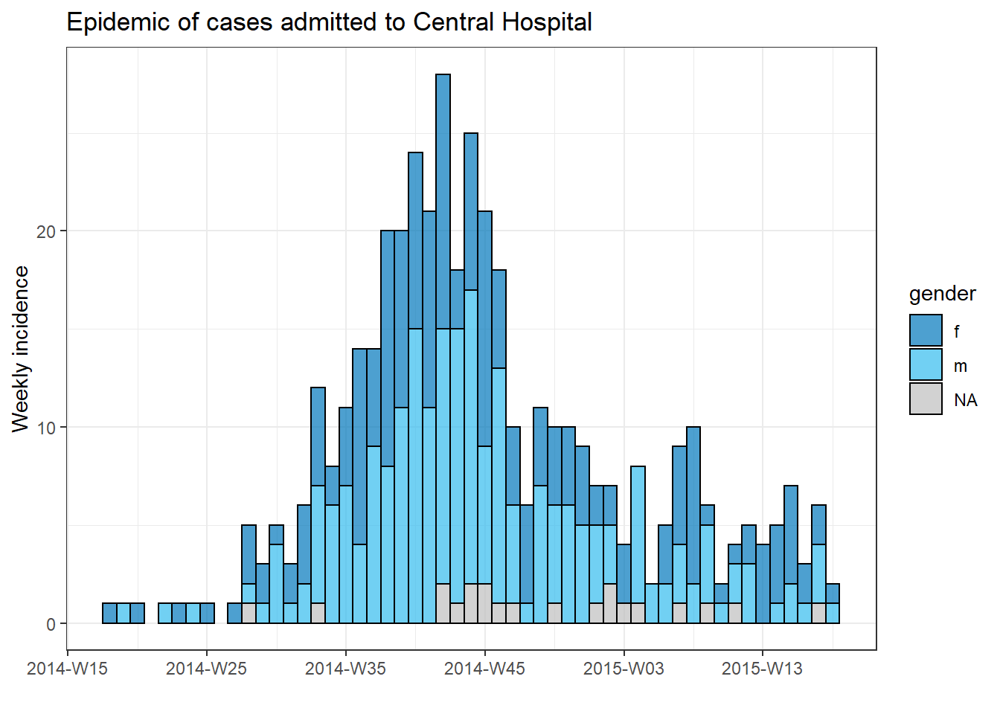
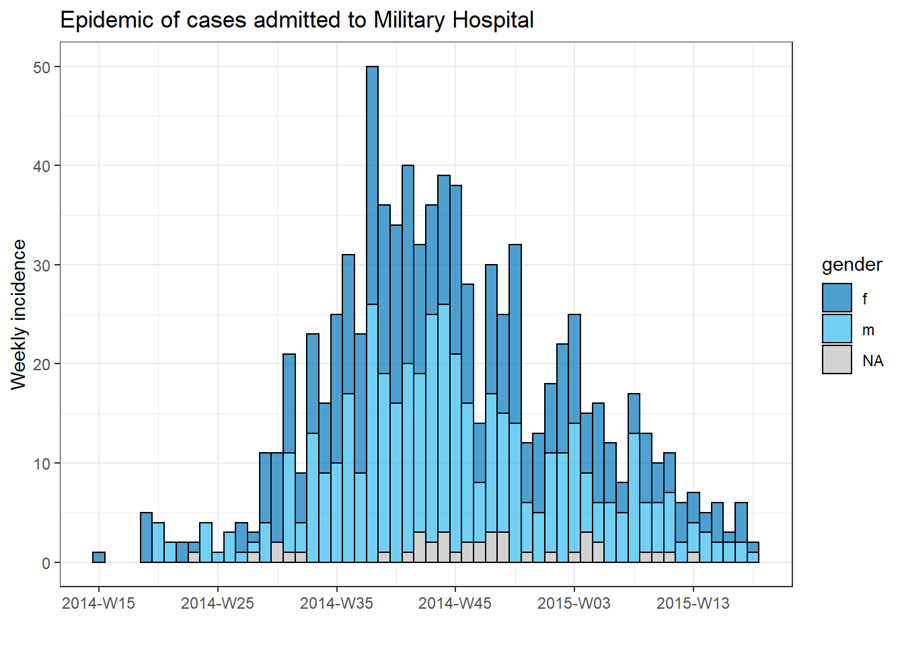
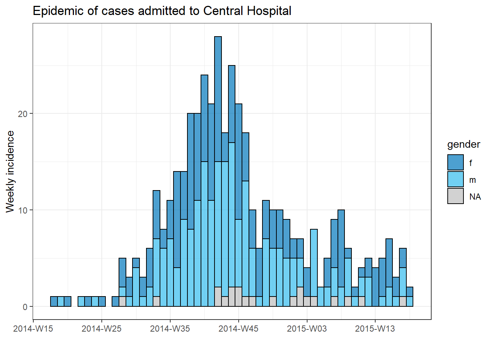
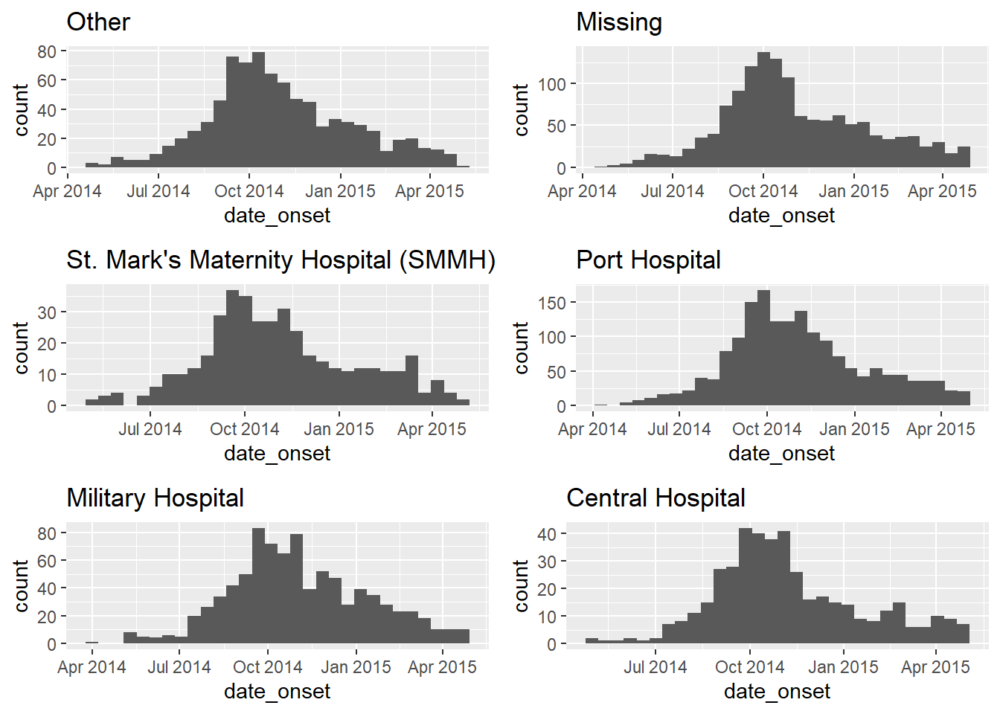

16 Iteration, loops, and lists
Epidemiologists often are faced with repeating analyses on subgroups such as countries, districts, or age groups. These are but a few of the many situations involving iteration. Coding your iterative operations using the approaches below will help you perform such repetitive tasks faster, reduce the chance of error, and reduce code length.
This page will introduce two approaches to iterative operations - using for loops and using the package purrr.
- for loops iterate code across a series of inputs, but are less common in R than in other programming languages. Nevertheless, we introduce them here as a learning tool and reference
- The purrr package is the tidyverse approach to iterative operations - it works by “mapping” a function across many inputs (values, columns, datasets, etc.)
Along the way, we’ll show examples like:
- Importing and exporting multiple files
- Creating epicurves for multiple jurisdictions
- Running T-tests for several columns in a data frame
In the purrr section we will also provide several examples of creating and handling lists.
16.1 Preparation
Load packages
This code chunk shows the loading of packages required for the analyses. In this handbook we emphasize p_load() from pacman, which installs the package if necessary and loads it for use. You can also load installed packages with library() from base R. See the page on R basics for more information on R packages.
pacman::p_load(
rio, # import/export
here, # file locator
purrr, # iteration
tidyverse # data management and visualization
)Import data
We import the dataset of cases from a simulated Ebola epidemic. If you want to follow along, click to download the “clean” linelist (as .rds file). Import data with the import() function from the rio package (it handles many file types like .xlsx, .csv, .rds - see the Import and export page for details).
# import the linelist
linelist <- import("linelist_cleaned.rds")The first 50 rows of the linelist are displayed below.
16.2 for loops
for loops in R
for loops are not emphasized in R, but are common in other programming languages. As a beginner, they can be helpful to learn and practice with because they are easier to “explore”, “de-bug”, and otherwise grasp exactly what is happening for each iteration, especially when you are not yet comfortable writing your own functions.
You may move quickly through for loops to iterating with mapped functions with purrr (see section below).
Core components
A for loop has three core parts:
- The sequence of items to iterate through
- The operations to conduct per item in the sequence
- The container for the results (optional)
The basic syntax is: for (item in sequence) {do operations using item}. Note the parentheses and the curly brackets. The results could be printed to console, or stored in a container R object.
A simple for loop example is below.
for (num in c(1,2,3,4,5)) { # the SEQUENCE is defined (numbers 1 to 5) and loop is opened with "{"
print(num + 2) # The OPERATIONS (add two to each sequence number and print)
} # The loop is closed with "}" ## [1] 3
## [1] 4
## [1] 5
## [1] 6
## [1] 7 # There is no "container" in this exampleSequence
This is the “for” part of a for loop - the operations will run “for” each item in the sequence. The sequence can be a series of values (e.g. names of jurisdictions, diseases, column names, list elements, etc), or it can be a series of consecutive numbers (e.g. 1,2,3,4,5). Each approach has their own utilities, described below.
The basic structure of a sequence statement is item in vector.
- You can write any character or word in place of “item” (e.g. “i”, “num”, “hosp”, “district”, etc.). The value of this “item” changes with each iteration of the loop, proceeding through each value in the vector.
- The vector could be of character values, column names, or perhaps a sequence of numbers - these are the values that will change with each iteration. You can use them within the for loop operations using the “item” term.
Example: sequence of character values
In this example, a loop is performed for each value in a pre-defined character vector of hospital names.
# make vector of the hospital names
hospital_names <- unique(linelist$hospital)
hospital_names # print## [1] "Other" "Missing" "St. Mark's Maternity Hospital (SMMH)" "Port Hospital"
## [5] "Military Hospital" "Central Hospital"We have chosen the term hosp to represent values from the vector hospital_names. For the first iteration of the loop, the value of hosp will be hospital_names[[1]]. For the second loop it will be hospital_names[[2]]. And so on…
# a 'for loop' with character sequence
for (hosp in hospital_names){ # sequence
# OPERATIONS HERE
}Example: sequence of column names
This is a variation on the character sequence above, in which the names of an existing R object are extracted and become the vector. For example, the column names of a data frame. Conveniently, in the operations code of the for loop, the column names can be used to index (subset) their original data frame
Below, the sequence is the names() (column names) of the linelist data frame. Our “item” name is col, which will represent each column name as the loops proceeds.
For purposes of example, we include operations code inside the for loop, which is run for every value in the sequence. In this code, the sequence values (column names) are used to index (subset) linelist, one-at-a-time. As taught in the R basics page, double branckets [[ ]] are used to subset. The resulting column is passed to is.na(), then to sum() to produce the number of values in the column that are missing. The result is printed to the console - one number for each column.
A note on indexing with column names - whenever referencing the column itself do not just write “col”! col represents just the character column name! To refer to the entire column you must use the column name as an index on linelist via linelist[[col]].
for (col in names(linelist)){ # loop runs for each column in linelist; column name represented by "col"
# Example operations code - print number of missing values in column
print(sum(is.na(linelist[[col]]))) # linelist is indexed by current value of "col"
}## [1] 0
## [1] 0
## [1] 2087
## [1] 256
## [1] 0
## [1] 936
## [1] 1323
## [1] 278
## [1] 86
## [1] 0
## [1] 86
## [1] 86
## [1] 86
## [1] 0
## [1] 0
## [1] 0
## [1] 2088
## [1] 2088
## [1] 0
## [1] 0
## [1] 0
## [1] 249
## [1] 249
## [1] 249
## [1] 249
## [1] 249
## [1] 149
## [1] 765
## [1] 0
## [1] 256Sequence of numbers
In this approach, the sequence is a series of consecutive numbers. Thus, the value of the “item” is not a character value (e.g. “Central Hospital” or “date_onset”) but is a number. This is useful for looping through data frames, as you can use the “item” number inside the for loop to index the data frame by row number.
For example, let’s say that you want to loop through every row in your data frame and extract certain information. Your “items” would be numeric row numbers. Often, “items” in this case are written as i.
The for loop process could be explained in words as “for every item in a sequence of numbers from 1 to the total number of rows in my data frame, do X”. For the first iteration of the loop, the value of “item” i would be 1. For the second iteration, i would be 2, etc.
Here is what the sequence looks like in code: for (i in 1:nrow(linelist)) {OPERATIONS CODE} where i represents the “item” and 1:nrow(linelist) produces a sequence of consecutive numbers from 1 through the number of rows in linelist.
for (i in 1:nrow(linelist)) { # use on a data frame
# OPERATIONS HERE
} If you want the sequence to be numbers, but you are starting from a vector (not a data frame), use the shortcut seq_along() to return a sequence of numbers for each element in the vector. For example, for (i in seq_along(hospital_names) {OPERATIONS CODE}.
The below code actually returns numbers, which would become the value of i in their respective loop.
seq_along(hospital_names) # use on a named vector## [1] 1 2 3 4 5 6One advantage of using numbers in the sequence is that is easy to also use the i number to index a container that stores the loop outputs. There is an example of this in the Operations section below.
Operations
This is code within the curly brackets { } of the for loop. You want this code to run for each “item” in the sequence. Therefore, be careful that every part of your code that changes by the “item” is correctly coded such that it actually changes! E.g. remember to use [[ ]] for indexing.
In the example below, we iterate through each row in the linelist. The gender and age values of each row are pasted together and stored in the container character vector cases_demographics. Note how we also use indexing [[i]] to save the loop output to the correct position in the “container” vector.
# create container to store results - a character vector
cases_demographics <- vector(mode = "character", length = nrow(linelist))
# the for loop
for (i in 1:nrow(linelist)){
# OPERATIONS
# extract values from linelist for row i, using brackets for indexing
row_gender <- linelist$gender[[i]]
row_age <- linelist$age_years[[i]] # don't forget to index!
# combine gender-age and store in container vector at indexed location
cases_demographics[[i]] <- str_c(row_gender, row_age, sep = ",")
} # end for loop
# display first 10 rows of container
head(cases_demographics, 10)## [1] "m,2" "f,3" "m,56" "f,18" "m,3" "f,16" "f,16" "f,0" "m,61" "f,27"Container
Sometimes the results of your for loop will be printed to the console or RStudio Plots pane. Other times, you will want to store the outputs in a “container” for later use. Such a container could be a vector, a data frame, or even a list.
It is most efficient to create the container for the results before even beginning the for loop. In practice, this means creating an empty vector, data frame, or list. These can be created with the functions vector() for vectors or lists, or with matrix() and data.frame() for a data frame.
Empty vector
Use vector() and specify the mode = based on the expected class of the objects you will insert - either “double” (to hold numbers), “character”, or “logical”. You should also set the length = in advance. This should be the length of your for loop sequence.
Say you want to store the median delay-to-admission for each hospital. You would use “double” and set the length to be the number of expected outputs (the number of unique hospitals in the data set).
delays <- vector(
mode = "double", # we expect to store numbers
length = length(unique(linelist$hospital))) # the number of unique hospitals in the datasetEmpty data frame
You can make an empty data frame by specifying the number of rows and columns like this:
delays <- data.frame(matrix(ncol = 2, nrow = 3))Empty list
You may want store some plots created by a for loop in a list. A list is like vector, but holds other R objects within it that can be of different classes. Items in a list could be a single number, a dataframe, a vector, and even another list.
You actually initialize an empty list using the same vector() command as above, but with mode = "list". Specify the length however you wish.
plots <- vector(mode = "list", length = 16)Printing
Note that to print from within a for loop you will likely need to explicitly wrap with the function print().
In this example below, the sequence is an explicit character vector, which is used to subset the linelist by hospital. The results are not stored in a container, but rather are printed to console with the print() function.
for (hosp in hospital_names){
hospital_cases <- linelist %>% filter(hospital == hosp)
print(nrow(hospital_cases))
}## [1] 885
## [1] 1469
## [1] 422
## [1] 1762
## [1] 896
## [1] 454Testing your for loop
To test your loop, you can run a command to make a temporary assignment of the “item”, such as i <- 10 or hosp <- "Central Hospital". Do this outside the loop and then run your operations code only (the code within the curly brackets) to see if the expected results are produced.
Looping plots
To put all three components together (container, sequence, and operations) let’s try to plot an epicurve for each hospital (see page on Epidemic curves).
We can make a nice epicurve of all the cases by gender using the incidence2 package as below:
# create 'incidence' object
outbreak <- incidence2::incidence(
x = linelist, # dataframe - complete linelist
date_index = date_onset, # date column
interval = "week", # aggregate counts weekly
groups = gender, # group values by gender
na_as_group = TRUE) # missing gender is own group
# plot epi curve
plot(outbreak, # name of incidence object
fill = "gender", # color bars by gender
color = "black", # outline color of bars
title = "Outbreak of ALL cases" # title
)
To produce a separate plot for each hospital’s cases, we can put this epicurve code within a for loop.
First, we save a named vector of the unique hospital names, hospital_names. The for loop will run once for each of these names: for (hosp in hospital_names). Each iteration of the for loop, the current hospital name from the vector will be represented as hosp for use within the loop.
Within the loop operations, you can write R code as normal, but use the “item” (hosp in this case) knowing that its value will be changing. Within this loop:
- A
filter()is applied tolinelist, such that columnhospitalmust equal the current value ofhosp
- The incidence object is created on the filtered linelist
- The plot for the current hospital is created, with an auto-adjusting title that uses
hosp
- The plot for the current hospital is temporarily saved and then printed
- The loop then moves onward to repeat with the next hospital in
hospital_names
# make vector of the hospital names
hospital_names <- unique(linelist$hospital)
# for each name ("hosp") in hospital_names, create and print the epi curve
for (hosp in hospital_names) {
# create incidence object specific to the current hospital
outbreak_hosp <- incidence2::incidence(
x = linelist %>% filter(hospital == hosp), # linelist is filtered to the current hospital
date_index = date_onset,
interval = "week",
groups = gender,
na_as_group = TRUE
)
# Create and save the plot. Title automatically adjusts to the current hospital
plot_hosp <- plot(
outbreak_hosp,
fill = "gender",
color = "black",
title = stringr::str_glue("Epidemic of cases admitted to {hosp}")
)
# print the plot for the current hospital
print(plot_hosp)
} # end the for loop when it has been run for every hospital in hospital_names  

 

Tracking progress of a loop
A loop with many iterations can run for many minutes or even hours. Thus, it can be helpful to print the progress to the R console. The if statement below can be placed within the loop operations to print every 100th number. Just adjust it so that i is the “item” in your loop.
# loop with code to print progress every 100 iterations
for (i in seq_len(nrow(linelist))){
# print progress
if(i %% 100==0){ # The %% operator is the remainder
print(i)
}16.3 purrr and lists
Another approach to iterative operations is the purrr package - it is the tidyverse approach to iteration.
If you are faced with performing the same task several times, it is probably worth creating a generalised solution that you can use across many inputs. For example, producing plots for multiple jurisdictions, or importing and combining many files.
There are also a few other advantages to purrr - you can use it with pipes %>%, it handles errors better than normal for loops, and the syntax is quite clean and simple! If you are using a for loop, you can probably do it more clearly and succinctly with purrr!
Keep in mind that purrr is a functional programming tool. That is, the operations that are to be iteratively applied are wrapped up into functions. See the Writing functions page to learn how to write your own functions.
purrr is also almost entirely based around lists and vectors - so think about it as applying a function to each element of that list/vector!
Load packages
purrr is part of the tidyverse, so there is no need to install/load a separate package.
pacman::p_load(
rio, # import/export
here, # relative filepaths
tidyverse, # data mgmt and viz
writexl, # write Excel file with multiple sheets
readxl # import Excel with multiple sheets
)map()
One core purrr function is map(), which “maps” (applies) a function to each input element of a list/vector you provide.
The basic syntax is map(.x = SEQUENCE, .f = FUNCTION, OTHER ARGUMENTS). In a bit more detail:
.x =are the inputs upon which the.ffunction will be iteratively applied - e.g. a vector of jurisdiction names, columns in a data frame, or a list of data frames
.f =is the function to apply to each element of the.xinput - it could be a function likeprint()that already exists, or a custom function that you define. The function is often written after a tilde~(details below).
A few more notes on syntax:
- If the function needs no further arguments specified, it can be written with no parentheses and no tilde (e.g.
.f = mean). To provide arguments that will be the same value for each iteration, provide them withinmap()but outside the.f =argument, such as thena.rm = Tinmap(.x = my_list, .f = mean, na.rm=T).
- You can use
.x(or simply.) within the.f =function as a placeholder for the.xvalue of that iteration
- Use tilde syntax (
~) to have greater control over the function - write the function as normal with parentheses, such as:map(.x = my_list, .f = ~mean(., na.rm = T)). Use this syntax particularly if the value of an argument will change each iteration, or if it is the value.xitself (see examples below)
The output of using map() is a list - a list is an object class like a vector but whose elements can be of different classes. So, a list produced by map() could contain many data frames, or many vectors, many single values, or even many lists! There are alternative versions of map() explained below that produce other types of outputs (e.g. map_dfr() to produce a data frame, map_chr() to produce character vectors, and map_dbl() to produce numeric vectors).
Example - import and combine Excel sheets
Let’s demonstrate with a common epidemiologist task: - You want to import an Excel workbook with case data, but the data are split across different named sheets in the workbook. How do you efficiently import and combine the sheets into one data frame?
Let’s say we are sent the below Excel workbook. Each sheet contains cases from a given hospital.

Here is one approach that uses map():
map()the functionimport()so that it runs for each Excel sheet
- Combine the imported data frames into one using
bind_rows()
- Along the way, preserve the original sheet name for each row, storing this information in a new column in the final data frame
First, we need to extract the sheet names and save them. We provide the Excel workbook’s file path to the function excel_sheets() from the package readxl, which extracts the sheet names. We store them in a character vector called sheet_names.
sheet_names <- readxl::excel_sheets("hospital_linelists.xlsx")Here are the names:
sheet_names## [1] "Central Hospital" "Military Hospital" "Missing" "Other" "Port Hospital"
## [6] "St. Mark's Maternity Hospital"Now that we have this vector of names, map() can provide them one-by-one to the function import(). In this example, the sheet_names are .x and import() is the function .f.
Recall from the Import and export page that when used on Excel workbooks, import() can accept the argument which = specifying the sheet to import. Within the .f function import(), we provide which = .x, whose value will change with each iteration through the vector sheet_names - first “Central Hospital”, then “Military Hospital”, etc.
Of note - because we have used map(), the data in each Excel sheet will be saved as a separate data frame within a list. We want each of these list elements (data frames) to have a name, so before we pass sheet_names to map() we pass it through set_names() from purrr, which ensures that each list element gets the appropriate name.
We save the output list as combined.
combined <- sheet_names %>%
purrr::set_names() %>%
map(.f = ~import("hospital_linelists.xlsx", which = .x))When we inspect output, we see that the data from each Excel sheet is saved in the list with a name. This is good, but we are not quite finished.

Lastly, we use the function bind_rows() (from dplyr) which accepts the list of similarly-structured data frames and combines them into one data frame. To create a new column from the list element names, we use the argument .id = and provide it with the desired name for the new column.
Below is the whole sequence of commands:
sheet_names <- readxl::excel_sheets("hospital_linelists.xlsx") # extract sheet names
combined <- sheet_names %>% # begin with sheet names
purrr::set_names() %>% # set their names
map(.f = ~import("hospital_linelists.xlsx", which = .x)) %>% # iterate, import, save in list
bind_rows(.id = "origin_sheet") # combine list of data frames, preserving origin in new column And now we have one data frame with a column containing the sheet of origin!

There are variations of map() that you should be aware of. For example, map_dfr() returns a data frame, not a list. Thus, we could have used it for the task above and not have had to bind rows. But then we would not have been able to capture which sheet (hospital) each case came from.
Other variations include map_chr(), map_dbl(). These are very useful functions for two reasons. Firstly. they automatically convert the output of an iterative function into a vector (not a list). Secondly, they can explicitly control the class that the data comes back in - you ensure that your data comes back as a character vector with map_chr(), or numeric vector with map_dbl(). Lets return to these later in the section!
The functions map_at() and map_if() are also very useful for iteration - they allow you to specify which elements of a list you should iterate at! These work by simply applying a vector of indexes/names (in the case of map_at()) or a logical test (in the case of map_if()).
Lets use an example where we didn’t want to read the first sheet of hospital data. We use map_at() instead of map(), and specify the .at = argument to c(-1) which means to not use the first element of .x. Alternatively, you can provide a vector of positive numbers, or names, to .at = to specify which elements to use.
sheet_names <- readxl::excel_sheets("hospital_linelists.xlsx")
combined <- sheet_names %>%
purrr::set_names() %>%
# exclude the first sheet
map_at(.f = ~import( "hospital_linelists.xlsx", which = .x),
.at = c(-1))Note that the first sheet name will still appear as an element of the output list - but it is only a single character name (not a data frame). You would need to remove this element before binding rows. We will cover how to remove and modify list elements in a later section.
Split dataset and export
Below, we give an example of how to split a dataset into parts and then use map() iteration to export each part as a separate Excel sheet, or as a separate CSV file.
Split dataset
Let’s say we have the complete case linelist as a data frame, and we now want to create a separate linelist for each hospital and export each as a separate CSV file. Below, we do the following steps:
Use group_split() (from dplyr) to split the linelist data frame by unique values in column hospital. The output is a list containing one data frame per hospital subset.
linelist_split <- linelist %>%
group_split(hospital)We can run View(linelist_split) and see that this list contains 6 data frames (“tibbles”), each representing the cases from one hospital.

However, note that the data frames in the list do not have names by default! We want each to have a name, and then to use that name when saving the CSV file.
One approach to extracting the names is to use pull() (from dplyr) to extract the hospital column from each data frame in the list. Then, to be safe, we convert the values to character and then use unique() to get the name for that particular data frame. All of these steps are applied to each data frame via map().
names(linelist_split) <- linelist_split %>% # Assign to names of listed data frames
# Extract the names by doing the following to each data frame:
map(.f = ~pull(.x, hospital)) %>% # Pull out hospital column
map(.f = ~as.character(.x)) %>% # Convert to character, just in case
map(.f = ~unique(.x)) # Take the unique hospital nameWe can now see that each of the list elements has a name. These names can be accessed via names(linelist_split).

names(linelist_split)## [1] "Central Hospital" "Military Hospital" "Missing" "Other"
## [5] "Port Hospital" "St. Mark's Maternity Hospital (SMMH)"More than one group_split() column
If you wanted to split the linelist by more than one grouping column, such as to produce subset linelist by intersection of hospital AND gender, you will need a different approach to naming the list elements. This involves collecting the unique “group keys” using group_keys() from dplyr - they are returned as a data frame. Then you can combine the group keys into values with unite() as shown below, and assign these conglomerate names to linelist_split.
# split linelist by unique hospital-gender combinations
linelist_split <- linelist %>%
group_split(hospital, gender)
# extract group_keys() as a dataframe
groupings <- linelist %>%
group_by(hospital, gender) %>%
group_keys()
groupings # show unique groupings ## # A tibble: 18 x 2
## hospital gender
## <chr> <chr>
## 1 Central Hospital f
## 2 Central Hospital m
## 3 Central Hospital <NA>
## 4 Military Hospital f
## 5 Military Hospital m
## 6 Military Hospital <NA>
## 7 Missing f
## 8 Missing m
## 9 Missing <NA>
## 10 Other f
## 11 Other m
## 12 Other <NA>
## 13 Port Hospital f
## 14 Port Hospital m
## 15 Port Hospital <NA>
## 16 St. Mark's Maternity Hospital (SMMH) f
## 17 St. Mark's Maternity Hospital (SMMH) m
## 18 St. Mark's Maternity Hospital (SMMH) <NA>Now we combine the groupings together, separated by dashes, and assign them as the names of list elements in linelist_split. This takes some extra lines as we replace NA with “Missing”, use unite() from dplyr to combine the column values together (separated by dashes), and then convert into an un-named vector so it can be used as names of linelist_split.
# Combine into one name value
names(linelist_split) <- groupings %>%
mutate(across(everything(), replace_na, "Missing")) %>% # replace NA with "Missing" in all columns
unite("combined", sep = "-") %>% # Unite all column values into one
setNames(NULL) %>%
as_vector() %>%
as.list()Export as Excel sheets
To export the hospital linelists as an Excel workbook with one linelist per sheet, we can just provide the named list linelist_split to the write_xlsx() function from the writexl package. This has the ability to save one Excel workbook with multiple sheets. The list element names are automatically applied as the sheet names.
linelist_split %>%
writexl::write_xlsx(path = here("data", "hospital_linelists.xlsx"))You can now open the Excel file and see that each hospital has its own sheet.

Export as CSV files
It is a bit more complex command, but you can also export each hospital-specific linelist as a separate CSV file, with a file name specific to the hospital.
Again we use map(): we take the vector of list element names (shown above) and use map() to iterate through them, applying export() (from the rio package, see Import and export page) on the data frame in the list linelist_split that has that name. We also use the name to create a unique file name. Here is how it works:
- We begin with the vector of character names, passed to
map()as.x
- The
.ffunction isexport(), which requires a data frame and a file path to write to
- The input
.x(the hospital name) is used within.fto extract/index that specific element oflinelist_splitlist. This results in only one data frame at a time being provided toexport().
- For example, when
map()iterates for “Military Hospital”, thenlinelist_split[[.x]]is actuallylinelist_split[["Military Hospital"]], thus returning the second element oflinelist_split- which is all the cases from Military Hospital.
- The file path provided to
export()is dynamic via use ofstr_glue()(see Characters and strings page):here()is used to get the base of the file path and specify the “data” folder (note single quotes to not interrupt thestr_glue()double quotes)
- Then a slash
/, and then again the.xwhich prints the current hospital name to make the file identifiable
- Finally the extension “.csv” which
export()uses to create a CSV file
names(linelist_split) %>%
map(.f = ~export(linelist_split[[.x]], file = str_glue("{here('data')}/{.x}.csv")))Now you can see that each file is saved in the “data” folder of the R Project “Epi_R_handbook”!

Custom functions
You may want to create your own function to provide to map().
Let’s say we want to create epidemic curves for each hospital’s cases. To do this using purrr, our .f function can be ggplot() and extensions with + as usual. As the output of map() is always a list, the plots are stored in a list. Because they are plots, they can be extracted and plotted with the ggarrange() function from the ggpubr package (documentation).
# load package for plotting elements from list
pacman::p_load(ggpubr)
# map across the vector of 6 hospital "names" (created earlier)
# use the ggplot function specified
# output is a list with 6 ggplots
hospital_names <- unique(linelist$hospital)
my_plots <- map(
.x = hospital_names,
.f = ~ggplot(data = linelist %>% filter(hospital == .x)) +
geom_histogram(aes(x = date_onset)) +
labs(title = .x)
)
# print the ggplots (they are stored in a list)
ggarrange(plotlist = my_plots, ncol = 2, nrow = 3)
If this map() code looks too messy, you can achieve the same result by saving your specific ggplot() command as a custom user-defined function, for example we can name it make_epicurve()). This function is then used within the map(). .x will be iteratively replaced by the hospital name, and used as hosp_name in the make_epicurve() function. See the page on Writing functions.
# Create function
make_epicurve <- function(hosp_name){
ggplot(data = linelist %>% filter(hospital == hosp_name)) +
geom_histogram(aes(x = date_onset)) +
theme_classic()+
labs(title = hosp_name)
}# mapping
my_plots <- map(hospital_names, ~make_epicurve(hosp_name = .x))
# print the ggplots (they are stored in a list)
ggarrange(plotlist = my_plots, ncol = 2, nrow = 3)Mapping a function across columns
Another common use-case is to map a function across many columns. Below, we map() the function t.test() across numeric columns in the data frame linelist, comparing the numeric values by gender.
Recall from the page on Simple statistical tests that t.test() can take inputs in a formula format, such as t.test(numeric column ~ binary column). In this example, we do the following:
- The numeric columns of interest are selected from
linelist- these become the.xinputs tomap()
- The function
t.test()is supplied as the.ffunction, which is applied to each numeric column
- Within the parentheses of
t.test():- the first
~precedes the.fthatmap()will iterate over.x
- the
.xrepresents the current column being supplied to the functiont.test()
- the second
~is part of the t-test equation described above
- the
t.test()function expects a binary column on the right-hand side of the equation. We supply the vectorlinelist$genderindependently and statically (note that it is not included inselect()).
- the first
map() returns a list, so the output is a list of t-test results - one list element for each numeric column analysed.
# Results are saved as a list
t.test_results <- linelist %>%
select(age, wt_kg, ht_cm, ct_blood, temp) %>% # keep only some numeric columns to map across
map(.f = ~t.test(.x ~ linelist$gender)) # t.test function, with equation NUMERIC ~ CATEGORICALHere is what the list t.test_results looks like when opened (Viewed) in RStudio. We have highlighted parts that are important for the examples in this page.
- You can see at the top that the whole list is named
t.test_resultsand has five elements. Those five elements are namedage,wt_km,ht_cm,ct_blood,tempafter each variable that was used in a t-test withgenderfrom thelinelist.
- Each of those five elements are themselves lists, with elements within them such as
p.valueandconf.int. Some of these elements likep.valueare single numbers, whereas some such asestimateconsist of two or more elements (mean in group fandmean in group m).

Note: Remember that if you want to apply a function to only certain columns in a data frame, you can also simply use mutate() and across(), as explained in the Cleaning data and core functions page. Below is an example of applying as.character() to only the “age” columns. Note the placement of the parentheses and commas.
# convert columns with column name containing "age" to class Character
linelist <- linelist %>%
mutate(across(.cols = contains("age"), .fns = as.character)) Extract from lists
As map() produces an output of class List, we will spend some time discussing how to extract data from lists using accompanying purrr functions. To demonstrate this, we will use the list t.test_results from the previous section. This is a list of 5 lists - each of the 5 lists contains the results of a t-test between a column from linelist data frame and its binary column gender. See the image in the section above for a visual of the list structure.
Names of elements
To extract the names of the elements themselves, simply use names() from base R. In this case, we use names() on t.test_results to return the names of each sub-list, which are the names of the 5 variables that had t-tests performed.
names(t.test_results)## [1] "age" "wt_kg" "ht_cm" "ct_blood" "temp"Elements by name or position
To extract list elements by name or by position you can use brackets [[ ]] as described in the R basics page. Below we use double brackets to index the list t.tests_results and display the first element which is the results of the t-test on age.
t.test_results[[1]] # first element by position##
## Welch Two Sample t-test
##
## data: .x by linelist$gender
## t = -21.3, df = 4902.9, p-value < 2.2e-16
## alternative hypothesis: true difference in means between group f and group m is not equal to 0
## 95 percent confidence interval:
## -7.544409 -6.272675
## sample estimates:
## mean in group f mean in group m
## 12.66085 19.56939t.test_results[[1]]["p.value"] # return element named "p.value" from first element ## $p.value
## [1] 2.350374e-96However, below we will demonstrate use of the simple and flexible purrr functions map() and pluck() to achieve the same outcomes.
pluck()
pluck() pulls out elements by name or by position. For example - to extract the t-test results for age, you can use pluck() like this:
t.test_results %>%
pluck("age") # alternatively, use pluck(1)##
## Welch Two Sample t-test
##
## data: .x by linelist$gender
## t = -21.3, df = 4902.9, p-value < 2.2e-16
## alternative hypothesis: true difference in means between group f and group m is not equal to 0
## 95 percent confidence interval:
## -7.544409 -6.272675
## sample estimates:
## mean in group f mean in group m
## 12.66085 19.56939Index deeper levels by specifying the further levels with commas. The below extracts the element named “p.value” from the list age within the list t.test_results. You can also use numbers instead of character names.
t.test_results %>%
pluck("age", "p.value")## [1] 2.350374e-96You can extract such inner elements from all first-level elements by using map() to run the pluck() function across each first-level element. For example, the below code extracts the “p.value” elements from all lists within t.test_results. The list of t-test results is the .x iterated across, pluck() is the .f function being iterated, and the value “p-value” is provided to the function.
t.test_results %>%
map(pluck, "p.value") # return every p-value## $age
## [1] 2.350374e-96
##
## $wt_kg
## [1] 2.664367e-182
##
## $ht_cm
## [1] 3.515713e-144
##
## $ct_blood
## [1] 0.4473498
##
## $temp
## [1] 0.5735923As another alternative, map() offers a shorthand where you can write the element name in quotes, and it will pluck it out. If you use map() the output will be a list, whereas if you use map_chr() it will be a named character vector and if you use map_dbl() it will be a named numeric vector.
t.test_results %>%
map_dbl("p.value") # return p-values as a named numeric vector## age wt_kg ht_cm ct_blood temp
## 2.350374e-96 2.664367e-182 3.515713e-144 4.473498e-01 5.735923e-01You can read more about pluck() in it’s purrr documentation. It has a sibling function chuck() that will return an error instead of NULL if an element does not exist.
Convert list to data frame
This is a complex topic - see the Resources section for more complete tutorials. Nevertheless, we will demonstrate converting the list of t-test results into a data frame. We will create a data frame with columns for the variable, its p-value, and the means from the two groups (male and female).
Here are some of the new approaches and functions that will be used:
- The function
tibble()will be used to create a tibble (like a data frame)- We surround the
tibble()function with curly brackets{ }to prevent the entiret.test_resultsfrom being stored as the first tibble column
- We surround the
- Within
tibble(), each column is created explicitly, similar to the syntax ofmutate():- The
.representst.test_results - To create a column with the t-test variable names (the names of each list element) we use
names()as described above
- To create a column with the p-values we use
map_dbl()as described above to pull thep.valueelements and convert them to a numeric vector
- The
t.test_results %>% {
tibble(
variables = names(.),
p = map_dbl(., "p.value"))
}## # A tibble: 5 x 2
## variables p
## <chr> <dbl>
## 1 age 2.35e- 96
## 2 wt_kg 2.66e-182
## 3 ht_cm 3.52e-144
## 4 ct_blood 4.47e- 1
## 5 temp 5.74e- 1But now let’s add columns containing the means for each group (males and females).
We would need to extract the element estimate, but this actually contains two elements within it (mean in group f and mean in group m). So, it cannot be simplified into a vector with map_chr() or map_dbl(). Instead, we use map(), which used within tibble() will create a column of class list within the tibble! Yes, this is possible!
t.test_results %>%
{tibble(
variables = names(.),
p = map_dbl(., "p.value"),
means = map(., "estimate"))}## # A tibble: 5 x 3
## variables p means
## <chr> <dbl> <named list>
## 1 age 2.35e- 96 <dbl [2]>
## 2 wt_kg 2.66e-182 <dbl [2]>
## 3 ht_cm 3.52e-144 <dbl [2]>
## 4 ct_blood 4.47e- 1 <dbl [2]>
## 5 temp 5.74e- 1 <dbl [2]>Once you have this list column, there are several tidyr functions (part of tidyverse) that help you “rectangle” or “un-nest” these “nested list” columns. Read more about them here, or by running vignette("rectangle"). In brief:
unnest_wider()- gives each element of a list-column its own column
unnest_longer()- gives each element of a list-column its own rowhoist()- acts likeunnest_wider()but you specify which elements to unnest
Below, we pass the tibble to unnest_wider() specifying the tibble’s means column (which is a nested list). The result is that means is replaced by two new columns, each reflecting the two elements that were previously in each means cell.
t.test_results %>%
{tibble(
variables = names(.),
p = map_dbl(., "p.value"),
means = map(., "estimate")
)} %>%
unnest_wider(means)## # A tibble: 5 x 4
## variables p `mean in group f` `mean in group m`
## <chr> <dbl> <dbl> <dbl>
## 1 age 2.35e- 96 12.7 19.6
## 2 wt_kg 2.66e-182 45.8 59.6
## 3 ht_cm 3.52e-144 109. 142.
## 4 ct_blood 4.47e- 1 21.2 21.2
## 5 temp 5.74e- 1 38.6 38.6Discard, keep, and compact lists
Because working with purrr so often involves lists, we will briefly explore some purrr functions to modify lists. See the Resources section for more complete tutorials on purrr functions.
list_modify()has many uses, one of which can be to remove a list element
keep()retains the elements specified to.p =, or where a function supplied to.p =evaluates to TRUE
discard()removes the elements specified to.p, or where a function supplied to.p =evaluates to TRUE
compact()removes all empty elements
Here are some examples using the combined list created in the section above on using map() to import and combine multiple files (it contains 6 case linelist data frames):
Elements can be removed by name with list_modify() and setting the name equal to NULL.
combined %>%
list_modify("Central Hospital" = NULL) # remove list element by nameYou can also remove elements by criteria, by providing a “predicate” equation to .p = (an equation that evaluates to either TRUE or FALSE). Place a tilde ~ before the function and use .x to represent the list element. Using keep() the list elements that evaluate to TRUE will be kept. Inversely, if using discard() the list elements that evaluate to TRUE will be removed.
# keep only list elements with more than 500 rows
combined %>%
keep(.p = ~nrow(.x) > 500) In the below example, list elements are discarded if their class are not data frames.
# Discard list elements that are not data frames
combined %>%
discard(.p = ~class(.x) != "data.frame")Your predicate function can also reference elements/columns within each list item. For example, below, list elements where the mean of column ct_blood is over 25 are discarded.
# keep only list elements where ct_blood column mean is over 25
combined %>%
discard(.p = ~mean(.x$ct_blood) > 25) This command would remove all empty list elements:
# Remove all empty list elements
combined %>%
compact()pmap()
THIS SECTION IS UNDER CONSTRUCTION
16.4 Apply functions
The “apply” family of functions is a base R alternative to purrr for iterative operations. You can read more about them here.
16.5 Resources
The R for Data Science page on iteration
Vignette on write/read Excel files
A purrr tutorial by jennybc
Another purrr tutorial by Rebecca Barter
A purrr tutorial on map, pmap, and imap
{kind=link}